1 Executive Summary
EchoSphere is Aurexion’s multi-tenant voice-AI platform: organizations (tenants) build, test, govern and publish AI voice bots that answer real phone calls, hold natural multilingual conversations (Hindi/Hinglish/English focus), answer from tenant knowledge bases, execute business workflows and API calls, and hand over to humans — with per-call usage metering, compliance enforcement and audit trails built in. The dominant production use case visible in the repository is outbound collections calling for Indian NBFC customers (mPokket) plus a hotel-operations customer (OYO).
The system is organized as two Python planes over one shared library, plus a React operations console:
- A control plane (
backend/) — a FastAPI application with 33 routers / 208 endpoints that owns identity, tenancy, the bot-building studio, governance, billing and audit, backed by MySQL as the source of truth. - A realtime voice plane (
voice_runtime/) — a Pipecat 1.5 streaming pipeline per call (VAD → STT → conversation brain → TTS) exposed twice: a worker on :9002 for browser test sessions and a telephony gateway on :9011 for dialers (Vaani) and FreeSWITCH, with ESL-based transfer/hangup control. - A shared library (
shared/) holding the data model (60 MySQL tables), AI orchestration (goal engine, LangGraph workflow interpreter, naturalness planner), the RAG subsystem (PostgreSQL + pgvector hybrid retrieval), provider adapters (OpenAI, Sarvam, Deepgram, ElevenLabs), billing, guardrails and compliance. - A React 18 SPA (~40k LOC, only three runtime dependencies) providing the Super-Admin platform console and the tenant Studio.
Four data stores split responsibilities deliberately: MySQL (configuration and operational source of truth), PostgreSQL/pgvector (knowledge chunks, vectors and workflow checkpoints), MongoDB (variable-shape call transcripts and event streams) and Redis (session handoff, config caches, replay protection — all deliberately fail-open). Background work (document ingestion, post-call intelligence) runs as durable-row poll workers embedded in the API and voice processes. An MCP server exposes tenant-scoped knowledge search to external LLM agents.
The architecture’s strongest properties, verified in code: strict server-side tenancy enforcement with 404-based
non-disclosure; a fail-closed guardrail floor; idempotent, price-snapshotted usage metering; a deeply engineered
low-latency voice path (explicit per-stage budgets, speculative prefetching, word-confirmed barge-in); and an unusual
discipline of explanatory comments citing measured incidents. Its most significant gaps: no rate limiting on the
REST API, secrets and sessions in browser localStorage, no TLS/containers/CI anywhere in the repository,
single-host deployment assumptions (per-process session registries), eventual-consistency seams between MySQL and the
knowledge plane, and several very large god-modules (brain.py 4,482 lines). Section 24 catalogues 40+
evidence-backed findings and section 25 prioritizes remediations.
2 System Overview
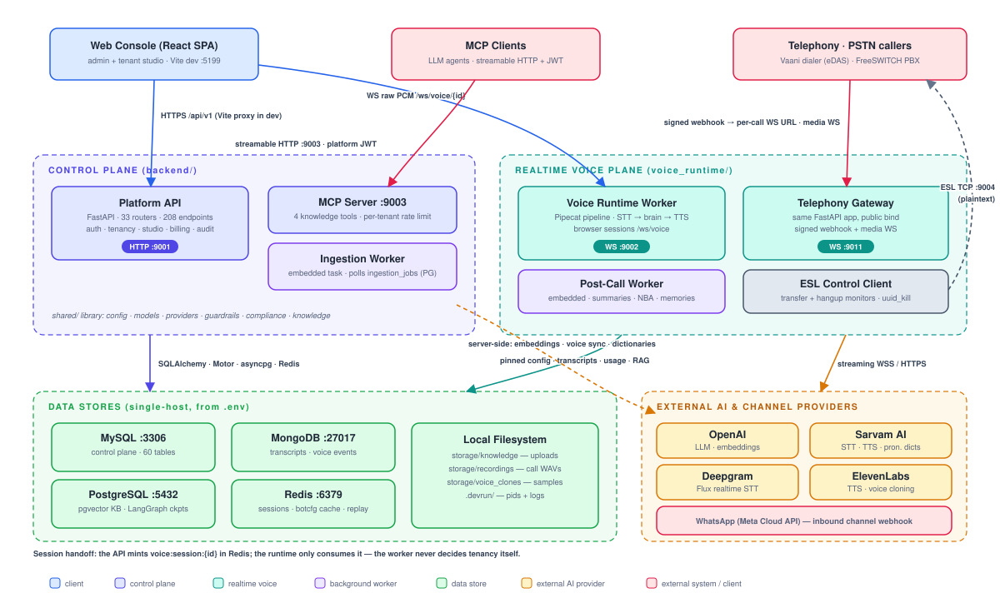
2.1 What the platform does
A tenant admin creates a VoiceBot in the Studio: uploads knowledge documents, authors versioned prompts (structured or freeform), defines intents/entities, draws a workflow on a canvas, selects STT/TTS/LLM providers and voices per language, configures channels, tests in a chat/voice console, then publishes a release. Publication is gated by a derived readiness checklist (knowledge indexed, prompts approved, workflow published, channels tested, voice selected, regression tests passing). Once published, a phone number assignment routes real calls: a dialer’s signed webhook resolves the dialed number to tenant and bot, compliance calling-windows and contact limits are enforced, a session is minted, and the caller converses with the bot over a streaming audio WebSocket. Every call produces a transcript, an optional stereo recording, idempotent usage events priced from snapshots, guardrail trigger records, and — when the tenant opts in — an AI post-call summary with a next-best-action that personalizes the customer’s next call.
2.2 Processes and ports
| Process | Module | Port | Role |
|---|---|---|---|
| Frontend (Vite dev) | node node_modules/vite/bin/vite.js | 5199 | React SPA; proxies /api → 127.0.0.1:9001 in dev |
| Platform API | backend.main | 9001 | REST control plane; embeds the ingestion worker by default |
| Voice worker | voice_runtime.app | 9002 | Browser voice sessions (/ws/voice/{id}); embeds the post-call worker |
| MCP server | backend.mcp_server.server | 9003 | Knowledge tools for LLM agents (streamable HTTP, platform JWT) |
| Telephony gateway | voice_runtime.gateway | 9011 | Same FastAPI app as the worker, public bind; dialer webhook + media WS |
| FreeSWITCH ESL | external | 9004 | Outbound TCP control connection from the voice plane (plaintext) |
| Ingestion worker | backend.workers.ingestion | — | Optional standalone; normally embedded in the API |
| Stores | MySQL · PostgreSQL · MongoDB · Redis | 3306 / 5432 / 27017 / 6379 | Locally installed; not supervised by dev.sh |
All ports come exclusively from .env via shared/config.py; a regression test
(tests/unit/test_port_configuration.py) pins the defaults. A client-specific mock service (oyo/) runs on 9021.
2.3 Scale of the implementation
| Area | Size (verified by line count) |
|---|---|
Frontend src/ | 40,287 LOC (32,575 app + 7,712 tests in 39 vitest suites); 159 shared type declarations |
Control plane backend/ | 28,388 LOC; routers are 15,426 (54%); 31 MySQL + 2 PostgreSQL Alembic revisions |
Shared library shared/ | 28,055 LOC; knowledge 7,066; orchestration 6,675; models 2,247 (60 tables) |
Voice runtime voice_runtime/ | 14,742 LOC; brain.py 4,482; call_policy.py 2,452 |
Backend tests tests/ | 38,333 LOC — 84 unit, 45 integration, 3 perf modules (run against real local stores) |
Documentation docs/ | 27 files, 10,493 lines, incl. a 5,782-line hand-written API reference |
3 Architecture Principles (as observed in code)
These are not aspirations from a README — each is a rule the implementation actually follows, with the mechanism named.
- The server is the only security boundary. Frontend gates are labeled “UI affordance only, never security”
(
src/state/AppContext.tsx:30); every one of the 208 endpoints carries an auth dependency, anddeps.pycomments state “hidden frontend buttons are never the security boundary”. - Tenant identity is never taken from the client for tenant roles — it always derives from the authenticated
user, the dialed number, or the server-minted session (
backend/core/deps.py:1-7;shared/voice_sessions.py:1-11). - Cross-tenant probes learn nothing. By-id access to another tenant’s row returns 404, deliberately not 403
(
deps.py:123-131); unauthorized knowledge-base ids are rejected “without revealing which”. - Fail closed on safety, fail open on availability. Guardrails degrade to a hardcoded mandatory floor
(
shared/guardrails/loader.py); Redis-backed conveniences (replay cache, rate buckets, contact counters) deliberately fail open with loud logs (docs/SECURITY.md:114-115). (The asymmetry this creates for compliance policies is flagged as risk R-11.) - Configuration is pinned per call. The compiled bot config snapshot is cached in Redis and frozen at call
start; publishing a release invalidates
botcfg:*so new calls see it while live calls keep their snapshot (shared/bot_config.py:7-8,backend/routers/releases.py:180-184). - Billable events are idempotent and price-snapshotted.
usage_events.request_idis unique; price changes are insert-only; a re-run of call finalization bills nothing (shared/billing/metering.py). - Secrets are references, never values. DB rows and settings store
env:VAR/secret://NAMEreferences resolved server-side at the moment of use; a mandatory log-redaction filter guards the logging boundary (shared/secrets.py,shared/logging_utils.py). - Latency budgets are explicit constants, not folklore: decision 1.2 s / 200 tokens, LLM first token 3 s, TTS first audio 4 s, adaptive endpoints 0.35/0.12 s — each with a comment explaining the measured incident behind it.
- Soft delete by default; hard deletion is environment-gated (
ALLOW_HARD_DELETE), and master data used by tenants can be deactivated but never removed. - One import direction:
backend → shared ← voice_runtime; the two planes never import each other (README.md:14-16) — honored everywhere except four documented breaches (risk R-20).
4 Technology Stack
| Layer | Technology (verified versions/pins) |
|---|---|
| Backend runtime | Python (venv env/, CPython 3.14 Inferred from the venv layout) · FastAPI ≥0.115 · Uvicorn ≥0.30 · Pydantic v2 + pydantic-settings |
| ORM / migrations | SQLAlchemy 2.0 (sync + PyMySQL for MySQL; async + asyncpg for PostgreSQL) · Alembic (two independent environments, separate version tables) |
| Realtime voice | pipecat-ai 1.5.0 ([silero] VAD) · sarvamai==0.1.28 (the only hard pin) · custom WS serializers per telephony provider |
| AI / orchestration | OpenAI SDK ≥1.60 (LLM gpt-4o-mini default, embeddings text-embedding-3-small 1536-d, Whisper) · LangGraph ≥1.0 + langgraph-checkpoint-postgres · tiktoken |
| Knowledge parsing | PyMuPDF · PyPDF2 · pdfplumber · python-docx · openpyxl · python-pptx · pytesseract (+ GPT-vision OCR fallback) |
| Vector search | PostgreSQL + pgvector (HNSW cosine) + GIN tsvector full-text; optional cross-encoder reranker (off by default) |
| Other stores | MongoDB via Motor ≥3.5 · Redis ≥5.0 (asyncio client per event loop) |
| AuthN | PyJWT (HS256) · bcrypt ≥4.1 |
| Frontend | React 18.3 · react-router-dom 6.26 · TypeScript 5.5 (strict, zero any) · Vite 5.4 · Vitest 3.2 + Testing Library — no UI kit, chart, state or HTTP library |
| Telephony | Vaani dialer (WS media, Twilio-style envelope) · FreeSWITCH (mod_audio_fork/mod_audio_stream media, ESL control, Lua glue) · declared-but-thin: Twilio/Telnyx/Plivo/Exotel |
| Reports | openpyxl (XLSX) · PyMuPDF/fitz (invoice PDF) · CSV with formula-injection defense |
| Tooling gaps | Verified no Docker, no CI, no ESLint, no Python lockfile (≥ ranges), mixed npm/pnpm lockfiles |
5 Repository Structure
EchoSphere/
├─ backend/ Control-plane FastAPI app (routers, core, serializers, seeds, reports,
│ alembic + alembic_pg, mcp_server, workers/ingestion, scripts) 28.4k LOC
├─ voice_runtime/ Realtime plane: app+gateway, pipecat pipeline, brain, call_policy,
│ tts_router, STT adapters, telephony serializers, freeswitch ESL 14.7k LOC
├─ shared/ Library used by both planes: models (60 tables), db, config, secrets,
│ orchestration, knowledge (RAG), providers, billing, guardrails,
│ compliance, post_call, telephony, safe_http, readiness 28.1k LOC
├─ src/ React SPA (pages/admin, pages/tenant, pages/tenant/studio,
│ components, services, state, types) 40.3k LOC
├─ tests/ pytest: unit (84) · integration (45, real local stores) · perf 38.3k LOC
├─ docs/ 27 markdown docs incl. hand-written API reference (5.8k lines)
├─ scripts/dev.sh The only process orchestrator (304 lines)
├─ storage/ Runtime data: knowledge uploads, ~1.5 GB call recordings, clone audio
├─ free_sweetch/ FreeSWITCH-host glue (voicebot.lua + webhook helper) — deployed off-repo
├─ oyo/ rateChange/ mpoket-prompt*.txt client-specific artifacts and one dead ops script
└─ env/ node_modules/ .devrun/ .devdb/ local toolchains and runtime state (not app code)Notable hygiene observations: 53 files under storage/ are git-tracked despite ignore rules (including real call
recordings — risk R-6); backend/voice_runtime/ contains only a stale __pycache__ of a removed runtime copy;
root-level client prompts and a vendor PDF live beside the code.
6 Layered Architecture
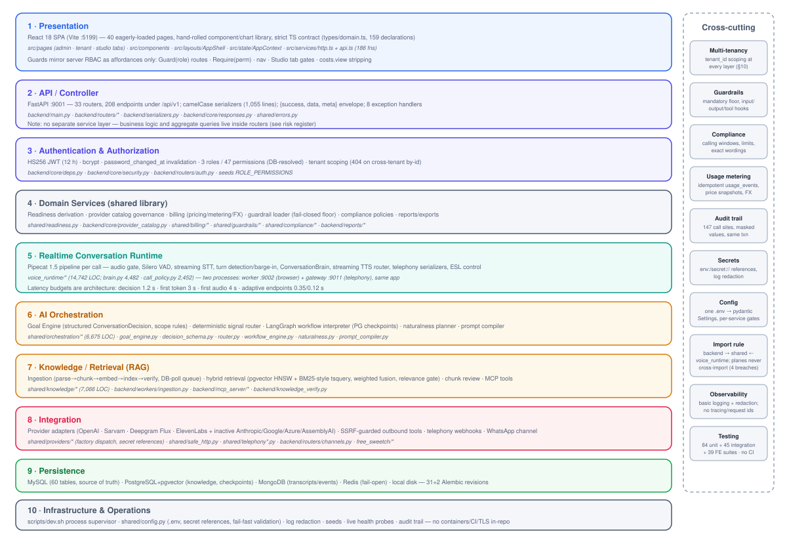
The codebase does not follow a textbook hexagonal or strict service-layer pattern; the honest layering is the one in Figure 2. Three deviations from a canonical design deserve emphasis:
- There is no application-service layer in the control plane. Routers validate, authorize, query, aggregate, audit and serialize themselves. This keeps each feature in one file but makes routers large (six exceed 800 lines) and spreads aggregate queries across the API surface (risks R-21, R-22).
- Domain logic is split by plane, not by domain. Conversation-domain logic lives in the realtime plane
(
brain.py,call_policy.py) while studio/governance logic lives in routers; the shared library holds the reusable middle (orchestration, knowledge, billing). One consequence: the collections business domain is hardcoded into the runtime plane (risk R-19). - Cross-cutting concerns are implemented as library calls, not middleware. Audit, tenancy scoping, cost stripping and permission checks are explicit per-endpoint calls — greppable and testable, but dependent on per-endpoint discipline (risk R-2 on the missing global tenant filter).
| # | Layer | Purpose · main components | Depends on | Talks to |
|---|---|---|---|---|
| 1 | Presentation | Operator console; route/nav/tab permission gating; typed API client | — | 2 (HTTP), 5 (WS for live voice tests) |
| 2 | API / Controller | 33 routers, envelope, serializers, exception handlers | 3, 4, 9 | 1, 9; health-probes 5 |
| 3 | AuthN/AuthZ | JWT, roles/permissions, tenant scoping, costs.view gate | 9 | every endpoint in 2; MCP |
| 4 | Domain services | readiness, provider governance, billing, guardrail loader, compliance, reports | 9 | 2, 5, 6 |
| 5 | Realtime runtime | pipecat pipeline, brain, TTS router, telephony serializers, ESL | 4, 6, 7, 8, 9 | callers, providers, stores |
| 6 | AI orchestration | goal engine, decision schema, signal router, workflow engine, naturalness | 8, 9 | 5, and 2 (testing console) |
| 7 | Knowledge / RAG | ingestion pipeline, hybrid retriever, review, MCP tools | 8, 9 | 5, 6, 2 |
| 8 | Integration | provider factory, SSRF-guarded HTTP, telephony webhooks, channels | 9 | external services |
| 9 | Persistence | 4 stores + filesystem, models, migrations | — | all layers |
| 10 | Infrastructure | dev.sh, .env settings, redaction, seeds, health probes | — | process level |
7 Detailed Component Architecture
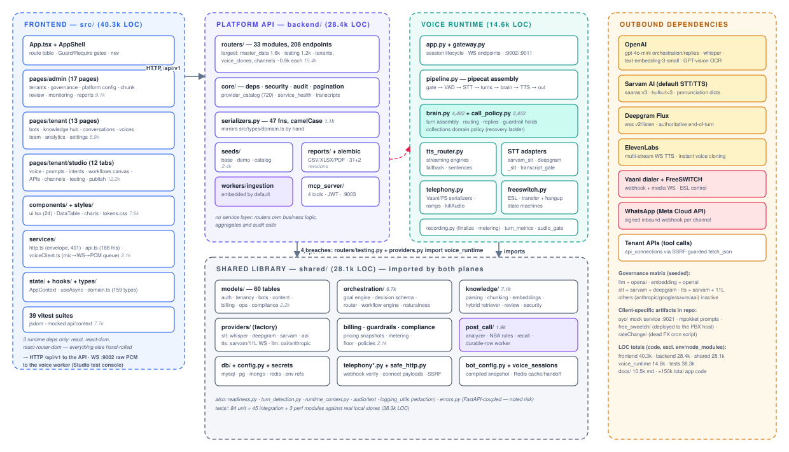
7.1 Control plane (backend/)
backend/main.py assembles the app: exactly one middleware (CORS), eight exception handlers, docs at
/api/docs (unauthenticated), and a lifespan that optionally runs migrations, connects Mongo and creates its
indexes, runs the idempotent base seed (on by default), and starts the embedded ingestion worker. The router
registry spans the whole product surface — from auth and users through bots, knowledge, prompts, intents, workflows,
channels, testing, releases, conversations, exports, analytics, usage, compliance, master data and platform
governance. Response shape is uniform: {"success": true, "data": …, "meta": {…}} built by
ok()/paginated(); errors are {"success": false, "message", "errors": [{field, message}]}. Serialization is
1,055 lines of hand-written camelCase dict literals that deliberately mirror src/types/domain.ts; there are no
FastAPI response models, so the OpenAPI schema documents request shapes only (risk R-23).
backend/core/ carries the real cross-cutting machinery: deps.py (auth & tenancy — §9–10),
security.py (bcrypt + JWT + shared password policy), audit.py (transactional audit writer with key
masking; 147 call sites), provider_catalog.py (720 lines of DB-driven provider/model/param validation),
service_health.py (live probes behind the admin health card), transcripts.py (canonical Mongo transcript
access) and softdelete.py.
7.2 Realtime plane (voice_runtime/)
One FastAPI app, two processes. app.py owns the session lifecycle (§15); gateway.py re-exports the same
app on the public telephony port after eagerly pre-importing the entire call runtime, because
mod_audio_stream drops sockets that are not accepted quickly. pipeline.py assembles the per-call Pipecat
chain with load-bearing ordering (energy gate ahead of VAD; STT before the turn processor; recorder after transport
output). brain.py is the conversation orchestrator — turn assembly, routing, guardrail holds, reply generation,
language following, telephony control — and at 4,482 lines is the largest component in the system (risk R-18).
call_policy.py implements the collections domain policy (identity confirmation, transaction-reference capture,
a strictly-ordered recovery ladder). tts_router.py maintains persistent provider WebSocket engines per
(provider, model, voice) with transient-error fallback and a first-audio watchdog. freeswitch.py hosts the ESL
client plus forward-only transfer and hangup state machines. recording.py finalizes exactly once: transcript,
control-plane row, usage events, recording, post-call enqueue.
7.3 Shared library (shared/)
The only sanctioned meeting point of the two planes. Highlights beyond §12–15: bot_config.py compiles
“number → tenant → bot → published release → providers → voices → intents → authorized KBs” into one Redis-cached,
per-call-pinned snapshot; readiness.py derives the r1–r7 checklist from real platform state;
turn_detection.py is a single schema driving runtime defaults, API validation and Studio UI;
safe_http.py is the SSRF guard for all tenant-configured outbound calls; telephony_webhooks.py verifies,
routes and compliance-gates inbound call webhooks. A noted inversion: shared/errors.py imports FastAPI and
SQLAlchemy, so non-HTTP processes transitively depend on the web framework (risk R-20).
7.4 Frontend (src/)
A deliberately dependency-light SPA: hand-rolled component library (24 components in ui.tsx), hand-rolled SVG
charts, a single global context (session/theme/toasts), one data-fetch hook (useAsync), and a 186-function typed
API client over a thin envelope-aware fetch wrapper. Routing gates (Guard by role, Require by permission)
mirror the server RBAC; the Studio is a 12-tab single route with per-tab permission gating. The live voice console
(voiceClient.ts) captures 16 kHz PCM via an inline AudioWorklet, streams it over a raw WebSocket, and plays the
bot’s PCM through a gapless scheduling queue that adopts whatever sample rate the worker announces. Notable debt:
five user-visible actions still route through a 350 ms simulateAction stub (risk R-25), there is no error
boundary and no code splitting, and permission strings are duplicated across three registries.
7.5 Background workers & MCP
Two durable-row poll workers, no broker: ingestion (PostgreSQL ingestion_jobs, FOR UPDATE SKIP
LOCKED, concurrency 2, 2 s poll, 3 attempts) and post-call (MySQL conversation_memories as its own queue
row, optimistic single-row claims, 3 s poll with an in-process wake event, stale-claim reclaim after 600 s). Both are
embedded in host processes by default and safe to run multi-instance. The MCP server exposes four read-only
knowledge tools over streamable HTTP, authenticates with the same platform JWTs, takes identity from the verified
token only, rate-limits 60/min/tenant (fail-open), audits every tool call, and sanitizes all errors.
8 Request / Data Flow
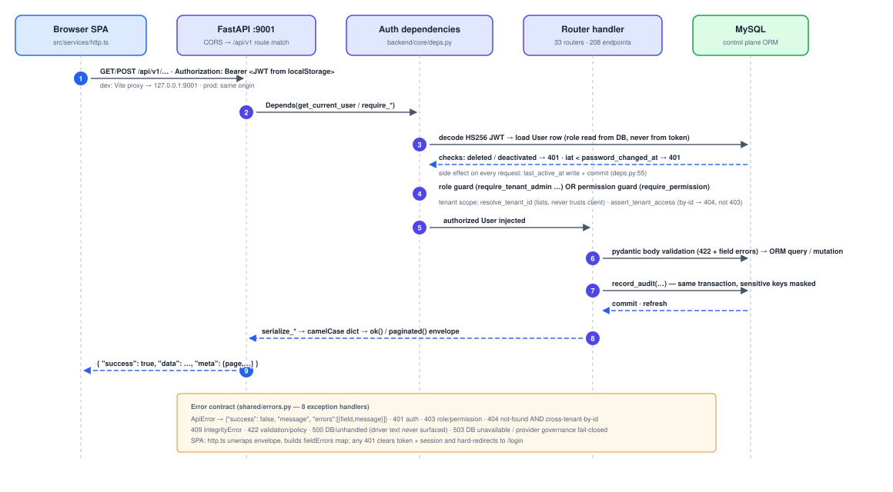
Three details of Figure 4 matter architecturally. First, authorization never trusts JWT claims beyond identity: the
user row, role and permissions are re-read from MySQL on every request, which makes revocation-by-password-change
possible but adds a per-request write (last_active_at + commit — risk R-24). Second, tenant scoping has two
distinct helpers with different disclosure semantics: list queries resolve the effective tenant (403 on a foreign
explicit id), while by-id access returns 404 to hide existence (the 403/404 asymmetry is itself noted as a minor leak,
risk R-31). Third, binary endpoints (exports, recordings, invoice PDFs) deliberately bypass the JSON envelope and
stream with sanitized filenames and formula-injection defenses.
9 Authentication & Authorization
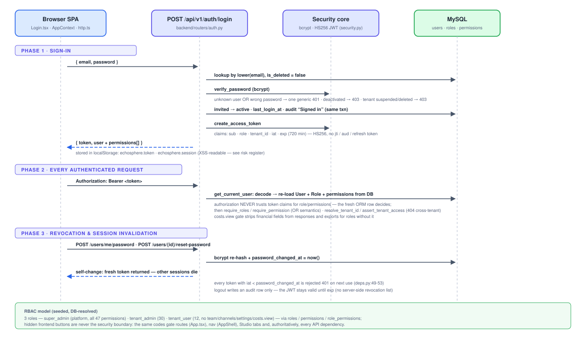
password_changed_at.9.1 Model
Single-token HS256 JWT (12 h expiry; claims sub, role, tenant_id, iat, exp; no
jti/refresh token). Passwords are bcrypt-hashed with one shared policy (≥8 chars, upper/lower/digit, deny-list)
used by login, self-change, admin reset, user creation and tenant onboarding. Three seeded roles carry flat permission
sets resolved from role_permissions at request time: super_admin (all 47), tenant_admin (30),
tenant_user (12 — deliberately excluding team, channels, settings, integrations, voice cloning and
costs.view). Role guards (require_tenant_admin…) and permission guards
(require_permission, OR semantics) coexist — which mechanism an endpoint uses is the author’s choice
(risk R-30).
9.2 Session invalidation & non-interactive auth
Any password change/reset stamps password_changed_at; tokens issued earlier are rejected with 401 on next use
— this is the platform’s only revocation lever (logout is audit-only). Non-interactive surfaces authenticate
differently: telephony webhooks use HMAC signatures with timestamp skew and Redis single-use replay protection;
WhatsApp uses Meta’s X-Hub-Signature-256; the MCP server re-uses platform JWTs in an auth middleware; the voice
WebSocket trusts only the server-minted session id and cross-checks the resolved bot’s tenant (close 4403 on
mismatch).
10 Multi-Tenant Architecture
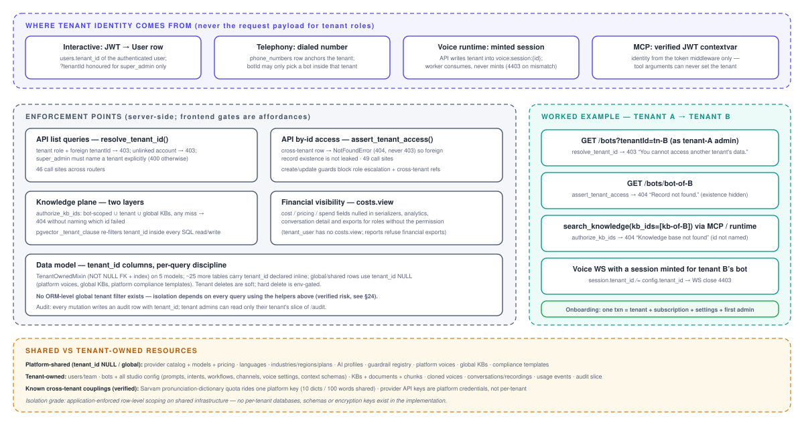
Isolation is application-enforced row-level scoping on shared infrastructure: one MySQL schema, one vector
store, one Mongo database, with tenant_id columns and per-query discipline. There are no per-tenant databases,
schemas or encryption keys. The discipline is real — 46 resolve_tenant_id and 49 assert_tenant_access
call sites, a second tenant filter compiled into every pgvector SQL statement, and financial-field stripping behind
costs.view — but it is conventional: only five models use the TenantOwnedMixin, the rest declare
tenant_id inline, and no ORM-level global filter exists (risk R-2). Tenant onboarding is a genuine single
transaction (tenant + plan-snapshot subscription + settings + first admin with a one-time returned temporary password
— there is no email delivery anywhere in the platform). Verified cross-tenant couplings worth leadership awareness:
provider API keys are platform-level credentials, and Sarvam’s pronunciation-dictionary quota (10 dictionaries /
100 words per account) is shared across all tenants (risk R-13).
11 Database & Storage Architecture
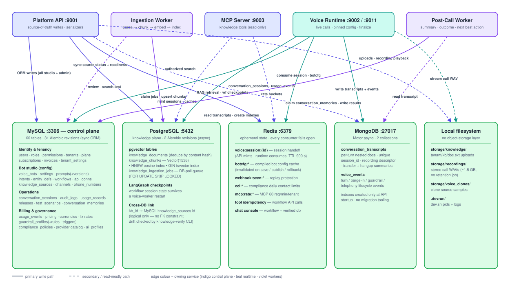
11.1 Division of responsibility
| Store | Owns | Why (verified rationale) |
|---|---|---|
| MySQL | 60 tables: identity/tenancy, the whole bot studio, operations (conversation rows, audit, releases), billing/governance | Relational source of truth; sync SQLAlchemy; 31 Alembic revisions |
| PostgreSQL | knowledge_documents/chunks/ingestion_jobs (pgvector HNSW + GIN tsvector) and LangGraph workflow checkpoints | Vector + full-text search need PG; checkpoints let workflow state survive a voice-worker restart; separate async Alembic env (alembic_version_pg) |
| MongoDB | conversation_transcripts (unique session_id), voice_events | “Per-turn nested lists whose shape varies” (shared/db/mongo.py:3-9); MySQL keeps the queryable summary row |
| Redis | Session handoff, botcfg:* cache, webhook replay, contact limits, MCP rate buckets, tool idempotency, chat-console state | Ephemeral/reconstructible only; every consumer fails open by design |
| Filesystem | Knowledge uploads, ~1.5 GB stereo call recordings, voice-clone samples, dev pids/logs | No object-storage abstraction exists (risk R-16) |
11.2 Cross-store integrity
The MySQL→PostgreSQL link (kb_id) is logical only — no FK, with status/counter synchronization performed by the
ingestion pipeline in separate sessions. The platform acknowledges this seam explicitly: a
knowledge-verify CLI cross-checks searchable sources against actual chunks, embedding-model drift, orphans and
missing indexes. Detection is therefore manual rather than guaranteed (risk R-14). Mongo has no migration tooling and
its indexes are created only by the API’s startup, while the voice worker is the primary writer (risk R-15).
12 Cache / Messaging Architecture
There is no message broker, no scheduler and no cron runner in the repository — verified by dependency and
code search (the one “cron” string is a dead ops script’s user-agent). Asynchronous work uses two durable-row poll
queues (§7.5) whose rows live in the primary databases, giving transactional enqueue and safe multi-instance claims at
the cost of poll latency (2–3 s floors) and no fan-out primitives. Release.scheduled_for is stored but nothing
consumes it — scheduled publishing is a stored intention without an executor (risk R-26).
Caching is layered and everywhere bounded by TTL: the Redis botcfg:* snapshot (300 s, explicitly invalidated on
settings save and release publish/rollback); in-process TTL caches for tool connections (45 s), workflow definitions
(30 s) and the provider catalog (frontend module cache); and per-call pinning as the consistency model for live
calls. Redis clients are cached per event loop; the sync invalidation path opens a second Redis client stack
(risk R-27). All Redis-dependent controls (replay, rate limits, contact limits) fail open on outage — an explicit,
documented availability-over-security trade (risk R-11).
13 AI / LLM Architecture
13.1 A two-stage, budgeted decision loop
The conversational core is decision-first orchestration. Stage A (the Goal Engine) makes one small,
hard-budgeted LLM call per turn — 1.2 s deadline, 200-token cap, two turns of history — that returns a validated
ConversationDecision: scope classification, gate answers, slot updates, a tool request and, crucially,
co-generated response_text. Deterministic scope rules then run on top of the model output: an out-of-scope or
injection-classified turn has its tool request and slots stripped and its next action forced to a redirect — the model
cannot authorize itself. When the decision’s action and language checks pass, that co-generated text is spoken
directly, collapsing the turn to a single model call (“the single largest latency lever on the voice path”).
Otherwise Stage B streams a reply with its own budgets (first token 3 s, 360-char cap, 0.6 s pause-flush to TTS).
Three consecutive Stage-A timeouts disable the engine for the rest of the call.
13.2 Deterministic layers around the model
Before any LLM sees a turn: a transcript quality gate (noise probability, confidence, foreign-script dominance, speech-rate sanity — fail-open), then a deterministic signal router (hangup/emergency/do-not-call detectors with negation handling, 12 ordered business-signal patterns, and intent matching by match-strength scoring rather than sample voting), then guardrail input checks. Clear yes/no answers, spoken transaction references and explicit commitments resolve via deterministic fast paths that skip the model entirely. Spoken-number normalization converts multilingual digit words to digits on derived copies only — the caller’s words are never rewritten for the transcript.
13.3 Model resolution, prompts and cost control
Model choice is resolved per bot from a four-layer governance chain (§16): the platform default is OpenAI
gpt-4o-mini for both orchestration and replies; when a reasoning-class conversation model is configured
(gpt-5*, o-series), the resolver deliberately keeps orchestration on gpt-4o-mini for latency. The live
system prompt comes from the published prompt_versions.compiled_prompt (structured 11-section builder or
freeform, with hard size caps that error rather than truncate); persona, delivery bands (empathy/energy as prompt
suffixes), memory block, context block and scope-adherence block are assembled once per call and cached. Every LLM
call — decision, reply, scripted-ask adaptation, grounded workflow reply, memory greeting, post-call analysis — folds
tokens into the same per-call counters and ultimately into idempotent usage_events; provider-reported usage is
preferred, with estimation flagged (usage_source="estimated"). Mock providers are never billed. Naturalness
(fillers, backchannels, micro-pauses, prosody variation) is planned by a pure-config RNG planner — zero model calls
— and is suppressed around amounts, identifiers, OTPs and compliance wording.
13.4 Guardrails and compliance at runtime
A per-session GuardrailEngine hooks four points: caller input, assistant output (streaming, sentence-held:
a violating sentence is never synthesized), tool execution (any guardrail hit in a turn denies all tool calls that
turn) and persistence (PII masking of card/Aadhaar/PAN before Mongo). Effective rules = hardcoded mandatory floor
∪ tenant profile, resolved fail-closed. Compliance policies (versioned, approved, tenant-activated rows: calling
windows, contact limits, exact legal wordings spoken verbatim) gate call admission and wording substitution — but
load fail-open, an asymmetry captured as risk R-11.
14 RAG / Knowledge Retrieval Architecture
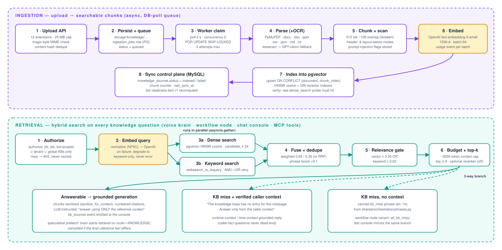
Figure 8 is the complete verified flow. Points that distinguish this implementation:
- Ingestion verifies itself: after indexing, a real
dense_searchprobe must return the document’s own chunks or the job fails — “indexed” means provably searchable. - Hybrid with OR-gated relevance: dense (pgvector HNSW cosine) and keyword (
websearch_to_tsquery, AND falling back to OR) run in parallel and fuse weighted 0.65/0.35; a chunk survives if either score clears its threshold, so exact keyword hits are never lost to embedding distance. Embedding failure degrades to keyword-only rather than erroring. - Security-in-depth: authorization happens in MySQL (
authorize_kb_ids: bot ∪ tenant ∪ global scope, misses unnamed) and again as a tenant clause inside every PG statement; retrieved text passes a prompt-injection sanitizer before entering the LLM context; chunks store injection flags detected at ingestion. - Misses do not dead-end: an unanswerable query with verified caller context (runtime-context record or time
context) reroutes to a context-grounded answer; only a true miss speaks the canned
kb_missphrase. - Everything is observable: retrieval returns stage-count/timing diagnostics (never content), the Studio has a
retrieval tester with below-threshold visibility, super admins get a chunk-review console with server-computed
quality signals (short/overlap/OCR/PII/injection), and the
knowledge-verifyCLI audits cross-store drift.
Known seams (details in §24): a re-index hard-deletes before re-inserting (search gap for that document, R-33); retrieval’s context budgeter uses a chars/4 approximation while ingestion counts real tokens (R-34); GPT-vision OCR bills nothing (R-35); the shared embedder’s usage counters can race across concurrent tenants (R-12).
15 Voice / Realtime Architecture
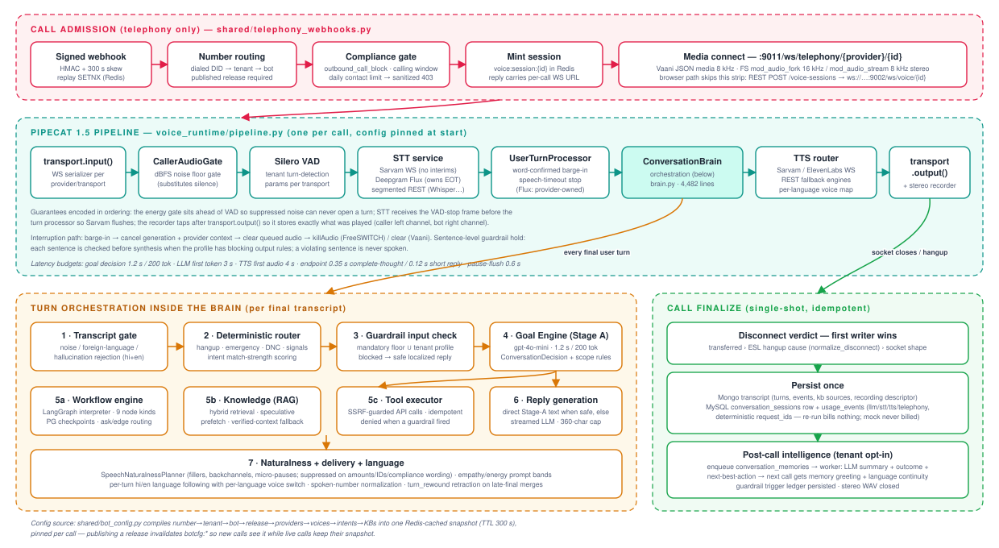
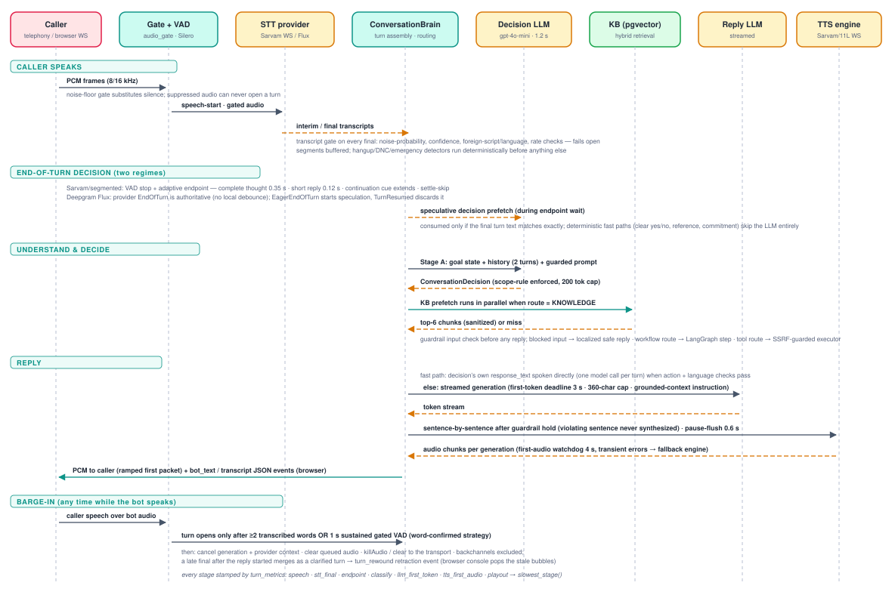
15.1 Session lifecycle
The API (or the gateway’s signed webhook) mints a Redis session; the runtime consumes it, resolves the pinned bot
config (published release required for non-browser channels), loads guardrails and compliance in parallel, attaches
runtime context and previous-call memory, builds the pipeline, and greets. Teardown is defensive: capacity (4429) and
duplicate-session (4409) gates, a max-call-duration hard cap, an inactivity check that deliberately overrides
Pipecat’s absolute session timeout while media is flowing, FreeSWITCH uuid_kill on bot-initiated ends (unless
transferred), and an idempotent finalize whose disconnect verdict is “first writer wins” across the transfer monitor,
the ESL hangup monitor (normalize_disconnect vocabulary) and socket shape.
15.2 Turn taking, STT and barge-in
Two mutually exclusive regimes. With Deepgram Flux, the provider owns end-of-turn (its EndOfTurn is
authoritative; EagerEndOfTurn starts speculation that TurnResumed discards); local VAD and turn strategies
are not even built. With Sarvam/segmented STT, Silero VAD (behind a dBFS energy gate that substitutes silence,
because normalized loudness makes raw VAD thresholds “effectively inert”) drives adaptive endpointing: 0.35 s after a
complete thought, 0.12 s after a lexicon-recognized short reply, extended on continuation cues — underwritten by
late-final merge plus a turn_rewound retraction event so the failure mode is a merge, not a talk-over. Barge-in
is word-confirmed: while the bot speaks, a turn opens only after ≥2 transcribed words or 1 s of sustained gated
speech; interruption cancels generation and provider TTS contexts, clears queued audio, and sends
killAudio/clear to the transport. Every final passes a transcript-quality gate; a per-turn metrics tracker
attributes latency to speech/STT/endpoint/decide/LLM/TTS/playout stages. Tenant-tunable turn detection is one schema
across runtime, API and UI, resolved per transport (browser vs telephony).
15.3 TTS and telephony transports
The streaming TTS router keeps one provider WebSocket per (provider, model, voice), switches per-language voices
without reconnects, aggregates sentences (NLTK boundaries, merge-forward, forced flush), applies canonical delivery
settings through a single capability-aware mapper, strips unspeakable fragments (the guard born from a live incident
where a punctuation-only payload 422’d and killed calls), falls back to a configured secondary engine only on
transient errors, and ends the call cleanly on fatal ones — with a 4 s first-audio watchdog. Telephony serializers
adapt the same pipeline to Vaani (JSON media envelope, 8 kHz PCM16, clear/stop control), FreeSWITCH
mod_audio_fork (16 kHz mono in / 8 kHz out) and mod_audio_stream (8 kHz stereo, caller = channel 0),
including a first-packet ramp that removed ~160 ms from every reply. Call control (transfer, hangup causes) runs over
a plaintext ESL connection with forward-only state machines and event-sequence dedupe; human handoff works only on
the audio_fork transport (risk R-8).
16 External Integrations
| Provider | Used for | Integration shape |
|---|---|---|
| OpenAI | Conversation + orchestration LLM, Whisper STT, embeddings, GPT-vision OCR fallback | HTTPS SDK; keys via env: references; usage folded into metering (OCR excepted — R-35) |
| Sarvam AI | Platform default STT (saaras:v3) and TTS (bulbul:v3); pronunciation dictionaries | Streaming WS + REST; SDK pinned 0.1.28; local adapter removes a measured 970 ms per-utterance stall; dictionary quota is account-wide (R-13) |
| Deepgram | Flux realtime STT with authoritative end-of-turn; legacy nova REST | WS v2/listen; billing from actual PCM bytes sent, never transcript metadata |
| ElevenLabs | Streaming TTS (multi-stream WS) and instant voice cloning | Clones become tenant-owned voice profiles; all provider calls server-side; source audio retained for replay |
| Vaani (eDAS) | Outbound dialer telephony | Signed webhook → per-call minted media WS on :9011; simulator + E2E checker + latency probe ship in-repo |
| FreeSWITCH | PBX media + call control | mod_audio_fork/stream WS media; ESL :9004 control; Lua/py glue deployed to the PBX host outside this repo’s packaging (R-9) |
| WhatsApp (Meta) | Inbound channel webhook per channel row | Hub-challenge + HMAC verification; the messaging conversation pipeline itself is not implemented |
| Tenant systems | Workflow/tool API calls, runtime-context sources | SSRF-guarded (safe_http): public-IP-only DNS validation, no redirects, response caps, header masking, idempotent execution |
Provider enablement is governed in four layers: a seeded platform allow-list (llm/embedding = openai; stt = sarvam,
deepgram; tts = sarvam, elevenlabs), catalog row status (fail-closed 503 for live sessions on deactivated providers;
mock hidden in production), per-tenant AI config profiles, and per-bot overrides validated against each model’s
params_schema. Adapters for Anthropic, Google, Azure and AssemblyAI exist but are outside the governed matrix.
Notably absent integrations: email/SMTP (invites return temporary passwords in API responses), object storage, and
payment gateways.
17 Configuration Management
One .env file feeds a cached pydantic Settings object (shared/config.py, ~90 fields): app/ports,
JWT, four store DSNs, feature switches, knowledge/RAG tuning (17 retrieval knobs), provider defaults and key
references, SSRF policy, worker cadences, voice/telephony parameters. validate_settings(service) fail-fasts
per process with named missing keys; provider-key warnings become errors when APP_ENV=production. Secret
hygiene is a first-class concern born of a documented incident (a trailing #paid key comment inside a
systemd-style env value caused live Sarvam 403s): values are sanitized of quotes/inline comments, and only lengths are
ever logged. Gaps: several settings lack .env.example counterparts; two FreeSWITCH knobs are documented but have
no reader (R-36); MySQL credentials are not URL-escaped unlike Postgres (R-37); ENABLE_DATABASE_SEED defaults
on, so the base seed (which includes convergence writes despite its “never modifies” docstring) runs at every API
boot (R-10).
18 Error Handling
The error architecture is centralized and disclosure-conscious: eight exception handlers translate everything into
the uniform envelope; SQL driver text never reaches clients; validation errors carry structured
{field, message} lists that the SPA folds into a fieldErrors map; provider governance failures are 503
(fail-closed) while missing prices are recorded, never fabricated. The voice plane maps errors to WebSocket close
codes (4400/4401/4403/4404/4409/4429/4500) and classifies TTS errors into transient (fallback engine), fatal
(clean call end) and the deliberately nuanced invalid-input case. Runtime resilience decisions are explicit
per subsystem: transcript gate fails open, guardrails fail closed, compliance fails open, checkpointing degrades to
memory, metering never fails the caller — catalogued with their consequences in §24.
19 Logging & Observability
Verified The observability story is thin by design-age: logging.basicConfig plus a
mandatory secret-redaction filter installed on every root handler and as a loguru sink replacement (covering
Pipecat), applied before any router import. There are no request/correlation ids, no access log, no structured
logging, no tracing, and no metrics endpoint; a 500 can only be tied to a path, not a caller or tenant (R-28).
What exists instead: a 147-call-site transactional audit trail (masked values, spoofable X-Forwarded-For ip
— R-29); live operator health probes for the five services (2 s timeout, real checks only) plus a datastore
readiness endpoint that always answers HTTP 200 (R-38); per-turn latency attribution inside calls
(turn_metrics with slowest_stage()); Mongo voice_events as a per-call event ledger; and dev.sh’s
per-service log files.
20 Security Boundaries
| Boundary | Mechanism (all verified) |
|---|---|
| Browser → API | Bearer JWT; CORS pinned to the frontend origin (but allow_credentials + wide methods/headers); envelope-only errors |
| Tenant → tenant | §10: derived tenant identity, 404 non-disclosure, per-query scoping, PG tenant clause, costs.view stripping |
| Dialer → platform | HMAC signatures + timestamp skew + Redis single-use replay; provider allow-list; sanitized 4xx; per-call minted WS URLs |
| Platform → tenant systems | SSRF guard: scheme/DNS/private-IP validation over all resolved addresses, no redirects, response caps, credential-in-URL rejection |
| LLM → platform | Decision scope rules; tool gate (guardrail hit ⇒ all tools denied that turn); tool selection never taken from the model; KB text sanitized; MCP identity from verified JWT only |
| Secrets | Reference model + log redaction + audit masking + channel-config masking on read |
| Uploads/files | Extension whitelist + magic-byte sniff + size cap; server-generated path segments; traversal-checked reads (recordings, clone audio, documents) |
| Exports | CSV formula-injection prefix defense; filename/worksheet sanitization; permission-gated financial reports |
Material gaps, all evidence-backed and consolidated in §24: no HTTP rate limiting or login lockout anywhere on the
REST API; JWT and session cached in localStorage (XSS-readable) with a 12 h single token; all services bind
0.0.0.0 with no TLS, security headers, or reverse-proxy config in-repo (ESL and media are plaintext by design
choice); unauthenticated /api/docs; ALLOW_HARD_DELETE=true in the live env; real call recordings tracked
in git; no secret rotation; no formal compliance certification claimed.
21 Scalability Considerations
- Control plane: stateless per request and horizontally scalable in principle, but three boot-time behaviors
need coordination first: seed-on-boot convergence writes, optional in-process migrations, and the embedded ingestion
worker (CPU-bound parsing/OCR sharing the API’s event loop and thread pool — R-17). The per-request
last_active_atcommit adds a write per authenticated call (R-24). - Voice plane: a call is pinned to one process; the concurrency cap (20/worker) and duplicate-session guard are per-process dictionaries, so horizontal scale requires sticky routing per session and a shared admission check (R-3). Redis session handoff already supports multiple workers; LangGraph checkpoints in PG deliberately let workflow state survive restarts. WS load-balancing guidance exists only as prose.
- Workers: SKIP-LOCKED / optimistic-claim designs are safely multi-instance today; poll intervals set the latency floor and the in-process wake event only helps same-process enqueues.
- Data: MySQL is a single instance with modest table counts; pgvector HNSW parameters are frozen at migration
time (post-hoc tuning of
.envknobs silently has no effect — R-39); recordings grow unboundedly on local disk with no retention job despite plan metadata for it (R-16); Mongo transcripts are per-call documents with appropriate indexes. - Throughput-relevant caches (botcfg 300 s, tool connections 45 s, workflow defs 30 s) bound staleness rather than requiring coherence; in-process caches (guardrail session registry, embedder singleton) are the main multi-process hazards (R-12).
22 Deployment Architecture
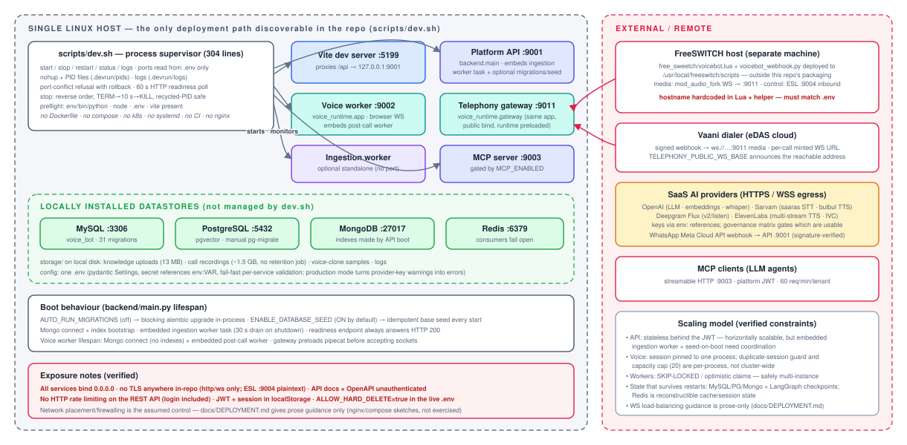
scripts/dev.sh, locally installed stores, and external telephony/AI dependencies.Verified The only reproducible deployment path in the repository is
scripts/dev.sh on a single host: careful process supervision (PID files, port-conflict rollback, readiness
polling, recycled-PID-safe stop) but no containers, unit files, reverse proxy, CI or TLS anywhere.
Inferred Production-like operation exists on Linux hosts under systemd with journald (the
secret-sanitizer documents a live systemd incident; a hardcoded echosphere.edas.tech appears in the FreeSWITCH
glue) — but no unit files are in-repo, so the actual production topology is Unclear.
docs/DEPLOYMENT.md contains an unexercised docker-compose sketch and nginx advice as prose. The FreeSWITCH
integration deploys two files to the PBX host with hostnames hardcoded in both a Lua URL-validation regex and a
Python helper — currently inconsistent with the live .env’s IP-based WS base, meaning that path works only when
configured with the DNS name (R-9).
23 Important Runtime Flows
23.1 Inbound call → first bot words
Signed webhook → replay check → number→tenant→bot (published release required) → voice-channel gate → compliance (outbound-block guardrail, calling window, daily contact limit; refusals write trigger rows and return sanitized 403) → session minted → dialer connects the media WS → duplicate/capacity gates → pinned config + guardrails∧compliance loaded in parallel → runtime context + previous-call memory attached → pipeline built → greeting (memory-personalized, language-continuous when enabled). Figure 9, top strip.
23.2 One caller turn
Figure 10 end-to-end: gate→VAD→STT→transcript gate→segment buffer→endpoint (or provider EOT)→deterministic router→guardrail input→Stage-A decision (with speculative prefetch)→route handler (workflow step / KB retrieve / tool)→direct or streamed reply→sentence-held guardrail check→TTS→ramped audio out, with word-confirmed barge-in and turn-retraction correcting the two natural failure modes (talk-over, split turns).
23.3 Publish → live traffic
Studio edits → readiness r1–r7 derive from real state → release created at review → approve → publish
re-computes the six-item checklist and hard-blocks on any gap → bot flips to published, versions stamped →
botcfg:* invalidated (new calls see the release; live calls keep their snapshot) → voice/WhatsApp/SMS channels
become activatable → rollback re-points live_version to the previous published release. Transition table is
enforced server-side; scheduled publish is stored but inert (R-26).
23.4 Document upload → answerable knowledge
Figure 8, top lane, ending in the self-verification probe, MySQL status/readiness sync, and immediate availability to retrieval, the Studio tester, the chat console and MCP clients.
23.5 Call end → intelligence → next call
Single-shot finalize (transcript, conversation row, idempotent usage events, recording descriptor, guardrail ledger) → post-call queue row (tenant opt-in) → worker produces summary/outcome/commitments and a deterministic next-best-action (verified platform state > captured commitments > LLM proposal) → the customer’s next call recalls the memory (tenant+bot scoped, resolution mirroring how the call identified the customer) into a generated, persona-consistent greeting with language continuity.
24 Architecture Findings — Risks & Technical Debt
All findings below are Verified against code (file references abbreviated; severities are the author’s judgment). S = security, R = reliability/correctness, D = data integrity, C = coupling/ maintainability, O = operability, F = frontend.
| Id | Sev. | Finding | Evidence · consequence |
|---|---|---|---|
| R-1 (S) | High | No rate limiting or login lockout on the REST API | Only the MCP server rate-limits (fail-open). POST /auth/login is unauthenticated and unthrottled — credential stuffing and enumeration-by-timing are unimpeded. |
| R-2 (S) | High | Tenant isolation is per-query discipline; no ORM-level global filter | Only 5 models use TenantOwnedMixin; one verified asymmetric miss already exists (delete_knowledge_base_data filters kb_id only). A single forgotten helper call is a cross-tenant leak. |
| R-3 (R) | High | Voice admission guards are per-process | _active_sessions dict + capacity cap don’t span the worker and gateway processes, let alone replicas — duplicate sessions possible across processes; dialer retries also mint new sessions (no callId idempotency). |
| R-4 (S) | High | JWT + session + permissions cached in localStorage; 12 h token; logout cosmetic | XSS-readable credentials; first render trusts client-cached RBAC until me() refresh; no refresh-token or revocation list. |
| R-5 (S) | High | Everything binds 0.0.0.0 with no TLS/headers/proxy in-repo; ESL and media WS plaintext; /api/docs unauthenticated | Security rests entirely on network placement that the repository cannot verify. |
| R-6 (S) | High | Real call recordings (~1.5 GB) and other storage/ files are git-tracked; ALLOW_HARD_DELETE=true in the live env | Customer call audio in VCS history; the soft-delete safety net is off in this environment. |
| R-7 (R) | High | Dead serializer branches on the transport path (Pipecat 1.5 only serializes a fixed frame set) | Browser bot_speaking_* events never emitted (test-console state never driven); telephony end-of-utterance tail flush unreachable; Vaani gets no protocol stop on the common cancel teardown. |
| R-8 (R) | High | Transfer flag set before wire delivery on mod_audio_stream | recorder.transferred=True even though that transport cannot transfer → hangup monitor stands down, uuid_kill skipped, end reason lies “transferred” — caller can sit on silence. |
| R-9 (O) | High | FreeSWITCH glue is unpackaged, host-hardcoded, and currently inconsistent with .env | Lua regex + helper pin echosphere.edas.tech:9011 while the env announces an IP — that path fails closed with a temporary-failure hangup unless configs are manually kept in lockstep. |
| R-10 (O) | Med | Base seed runs at every API boot and performs convergence writes despite “never modifies” docstring | Production rows can change on restart; multi-replica boots race; demo seed carries a hardcoded password constant with no env gate. |
| R-11 (R) | Med | Fail-open asymmetry: compliance policies and Redis controls vs fail-closed guardrails | A MySQL blip silently disables calling-window/contact-limit enforcement; a Redis outage disables webhook replay protection and MCP rate limits — documented, but a real regulatory exposure for a collections platform. |
| R-12 (D) | Med | Shared embedder singleton stores per-call usage in mutable attributes; metering task fire-and-forget | Concurrent retrievals can misattribute token usage across tenants; the unreferenced asyncio task can be GC’d — query-embedding billing silently lossy. |
| R-13 (S) | Med | Cross-tenant shared provider credentials and quotas | One Sarvam key ⇒ account-wide pronunciation-dictionary quota (10/100) shared by all tenants; a noisy tenant exhausts it platform-wide. |
| R-14 (D) | Med | MySQL↔PG knowledge consistency is eventual and manually audited | Logical kb_id link, separate-session status/counter sync, drift detected only by the knowledge-verify CLI; original upload files are never deleted (uncalled delete_original). |
| R-15 (D) | Med | Mongo indexes bootstrapped only by the API process; no Mongo migrations | Voice worker booted against fresh Mongo lacks the unique session_id index → duplicate transcript docs possible. |
| R-16 (O) | Med | No object storage, no retention enforcement | 1.5 GB local WAVs and counting; recording_retention_days exists only as plan metadata; one orphaned .pcm.part proves temp-file leakage on crash. |
| R-17 (O) | Med | Ingestion worker embedded in the API process by default (hardcoded concurrency 2) | Tesseract-at-350-DPI over 25 MB PDFs competes with request handling; disable switch is a test env var, not ops config. |
| R-18 (C) | Med | God modules | brain.py 4,482 (110 methods, 60+ init attributes), call_policy.py 2,452, master_data.py 1,627, VoiceTab.tsx 1,942, PlatformConfig.tsx 1,837, api.ts 766/186 fns. |
| R-19 (C) | Med | Collections domain hardcoded in the “domain-neutral” runtime | call_policy imported unconditionally; magic intent names and a hardcoded tool list in brain.py contradict the stated neutrality of goal engine/decision schema. |
| R-20 (C) | Med | Layering breaches | shared/errors.py imports FastAPI/SQLAlchemy (web stack leaks into every process); backend imports voice_runtime in 4 places (API transitively depends on Pipecat for preview/test endpoints). |
| R-21 (C) | Med | No service layer; aggregates in routers; serializers demand caller-computed stats | N+1 responsibility and business rules spread across 33 modules; consistency by convention. |
| R-22 (C) | Low | Route-prefix inconsistency and split knowledge routing | 2 of 33 routers use APIRouter prefixes; GET vs PATCH/DELETE /knowledge/{id} live in different modules with order-dependent matching. |
| R-23 (C) | Med | Hand-mirrored contract: 1,055-line serializers ↔ 2,027-line domain.ts | No response models; drift caught only by tests; OpenAPI lacks response shapes. |
| R-24 (R) | Med | get_current_user writes + commits on every request | Hot-path write amplification; the commit also flushes any pending session state mid-request. |
| R-25 (F) | Med | Five fake success actions still shipping | Tenant suspend, alert acknowledge, bot clone/archive-adjacent action, three conversation “improvement” CTAs — all toast success via simulateAction without doing anything. |
| R-26 (O) | Low | Stored-but-inert features | Release.scheduled_for (no scheduler exists); 3 of 6 feature flags referenced nowhere; per-channel publicWsBase validated, persisted, never read. |
| R-27 (C) | Low | Duplicate client stacks & loop-keyed Redis cache | Sync + async Redis clients for one cache; clients keyed on id(event_loop) can collide after GC; demo seed uses raw pymongo beside Motor. |
| R-28 (O) | Med | No request ids / tracing / structured logs / metrics | 500s untraceable to caller/tenant; cross-service call debugging depends on per-call Mongo events only. |
| R-29 (S) | Low | Audit IP trusts first X-Forwarded-For hop unconditionally | Attacker-controllable audit provenance absent a trusted proxy (none configured in-repo). |
| R-30 (S) | Low | Two authorization vocabularies with overlapping codes | Dotted vs snake_case permissions (knowledge.manage vs manage_knowledge) grant differently to tenant_user; role-guard vs permission-guard choice is per-endpoint convention. |
| R-31 (S) | Low | 403/404 disclosure asymmetry | resolve_tenant_id confirms foreign-tenant validity with 403 where assert_tenant_access deliberately hides it with 404. |
| R-32 (R) | Low | Workflow checkpointing silently degrades to memory | Any PG error ⇒ MemorySaver; in-progress workflows then do not survive restart, contrary to the module’s stated guarantee. |
| R-33 (D) | Low | Re-index search gap | Hard-delete-then-reinsert contradicts the “old chunks stay searchable” docstring; large OCR docs are unanswerable for the whole run. |
| R-34 (D) | Low | Two token models in one RAG path | tiktoken at ingestion vs chars/4 at retrieval budgeting; stored per-chunk token_count ignored by the budgeter. |
| R-35 (D) | Low | Unmetered GPT-vision OCR; mock-never-billed is a convention | OCR LLM calls emit no usage events; the mock guard is re-implemented at 3+ sites rather than enforced centrally in record_usage_event. |
| R-36 (O) | Low | Documented settings with no reader | freeswitch_caller_channel, freeswitch_input_gain exist in config+docs only; serializers hardcode channel 0 and apply no gain. |
| R-37 (R) | Low | Config sharp edges | MySQL DSN unescaped credentials; postgres_sync_url returns the async URL; MAX_PASSWORD_LENGTH declared, never enforced. |
| R-38 (O) | Low | Readiness endpoint always returns HTTP 200; two health systems don’t reference each other | Status-code-keyed orchestrator probes would treat an unready API as healthy. |
| R-39 (D) | Low | Index/config drift traps in pgvector | HNSW params and tsvector config frozen at migration; changing the env knobs silently degrades (sequential scans / no effect); EMBEDDING_DIM constant vs configurable dimension fails per-document at runtime. |
| R-40 (F) | Low | Frontend robustness gaps | No error boundary or code splitting (whole admin bundle to every user; render throw white-screens); hard-coded ws:// breaks live voice under HTTPS; permission strings triplicated; a few hardcoded light-theme colors; no ESLint despite disable comments. |
Positive findings worth preserving as intentional architecture: 404-based tenancy non-disclosure; idempotent finalize/metering; word-confirmed barge-in; ingestion self-verification; fail-closed guardrail floor; incident-documenting comments; readiness derived from real state; the “no fabricated health” probe rule; export injection defenses.
25 Recommended Improvements
Prioritized against the register above; effort grades are relative. These are recommendations, not verified facts.
25.1 Now (security & correctness, low effort)
- Add rate limiting + lockout to
/auth/loginand a global limiter (Redis token bucket already idiomatic here) — R-1. Gate/api/docsby env. Purge recordings from git history and re-point ignores — R-6. - Fix the
mod_audio_streamtransfer flag (settransferredonly when the control actually reaches the wire) — R-8; add Vaanistop/tail-flush onCancelFramepaths and either emit browser speaking events from the brain or drop the dead branches — R-7. - Make compliance-policy load failures fail closed for collections tenants (block the call, as calling-window law implies) or at minimum alert — R-11.
- Add a
provider_code=="mock"guard insiderecord_usage_event; return per-call usage objects from the embedder instead of instance attributes; hold references to metering tasks — R-12, R-35. - Create Mongo indexes from the voice worker’s lifespan too — R-15. Honor
callIdas an idempotency key at the webhook — R-3 (partial).
25.2 Next (structural, medium effort)
- Introduce a shared admission service for voice sessions (Redis SETNX per session id + global concurrency) to unlock multi-process/multi-host voice — R-3; document/automate sticky WS routing.
- Split ingestion out of the API process by default; make embedded mode an explicit ops flag — R-17. Add an object-storage abstraction + retention job for recordings/uploads — R-16.
- Adopt an ORM-level tenant guard (SQLAlchemy
with_loader_criteriaon a marker base) as defense-in-depth beneath the existing helpers — R-2; unify the permission catalog naming and pick one guard vocabulary per surface — R-30. - Carve
brain.pyalong its already-visible seams (turn assembly / routing / reply / telephony control) and extract the collections policy behind the existing domain-policy interface into a plugin package — R-18, R-19. Splitapi.tsby domain and add an error boundary + route-level code splitting — R-40. - Introduce request ids (middleware + log record factory + audit column) and structured logging; emit the existing turn metrics to a metrics sink — R-28.
- Generate the frontend types from typed response models (or publish serializer-driven JSON schema) to end the hand-mirroring — R-23.
25.3 Later (platform maturity)
- Containerize the six processes and add CI (pytest + vitest + the port/contract regression tests already written); pin Python deps with a lockfile — closes the largest operability gap.
- TLS termination + security headers via a checked-in reverse-proxy config; move browser auth toward short-lived tokens + httpOnly refresh — R-4, R-5.
- Replace poll queues with Redis streams (or keep rows + LISTEN/NOTIFY) where latency matters; implement the scheduled-publish executor or remove the field — R-26.
- Per-tenant provider credentials/quotas for externally billed resources (starting with pronunciation dictionaries) — R-13.
- Wire the five simulated UI actions to the real endpoints that already exist (suspend, acknowledge, archive) or hide them behind flags — R-25; finish or remove the three dead feature flags.
Prepared from full-repository static analysis (six parallel code surveys, cross-checked; no application code was
modified). Companion sources: the editable master of this document (docs/architecture/SYSTEM_ARCHITECTURE.html),
the eleven diagram sources (docs/architecture/diagrams/*.svg) and the build pipeline
(docs/architecture/build/).